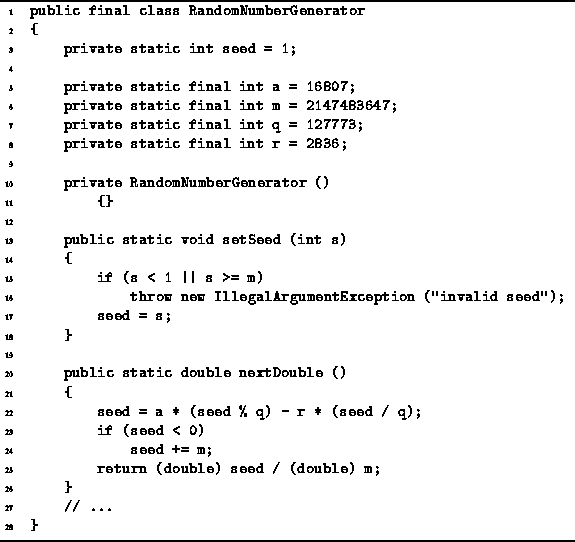

Data Structures and Algorithms
with Object-Oriented Design Patterns in Java
Data Structures and Algorithms
with Object-Oriented Design Patterns in Java
We now describe the implementation of a random number generator
based on Equation  .
Program
defines the RandomNumberGenerator class.
This class has only static fields and methods.
In addition, the constructor is declared private
to prevent instantiation.
Because there can only be one instance of a static field,
the implementation of the RandomNumberGenerator class
is an example of the singleton design pattern.
.
Program
defines the RandomNumberGenerator class.
This class has only static fields and methods.
In addition, the constructor is declared private
to prevent instantiation.
Because there can only be one instance of a static field,
the implementation of the RandomNumberGenerator class
is an example of the singleton design pattern.

Program: RandomNumberGenerator class.
The setSeed method is used
to specify the initial seed,  .
The seed must fall between 0 and m-1.
If it does not, an exception is thrown.
.
The seed must fall between 0 and m-1.
If it does not, an exception is thrown.
The nextDouble method generates the elements of the random sequence.
Each subsequent call returns the next element of the sequence.
The implementation follows directly from Equation .
Notice that the return value is normalized.
Therefore, the values computed by the nextDouble method are uniformly
distributed on the interval (0,1).
 Copyright © 1998 by Bruno R. Preiss, P.Eng. All rights reserved.
Copyright © 1998 by Bruno R. Preiss, P.Eng. All rights reserved.